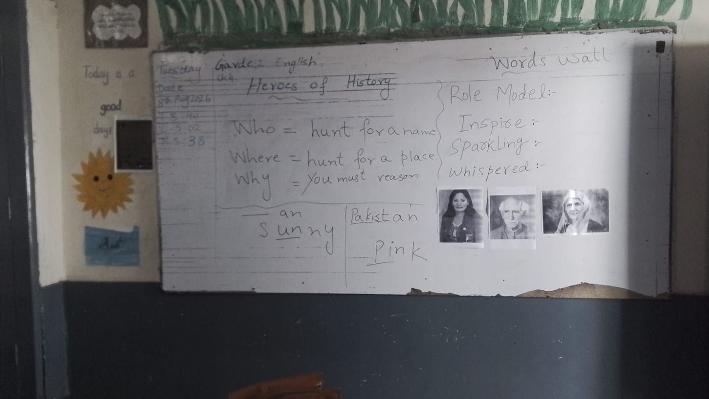

Lohi Bher, 8 September
Two lessons watched against their lesson plans, a staff room that said what the numbers could not, and the decisions taken by four o'clock the same afternoon.


What the database already knew
Before anyone drove to Sihala, one query against the governed data layer produced the shape of the school. It set the questions for the day, and it named the people we hoped to sit with.


The plan we walked in with
The brief named three teachers to observe: Samina Saleem, because 102 plans in six weeks and a 7.5% lesson-plan-fidelity score on her one human observation cannot both be the whole story; Naheed Akhter, the only active teacher who had never recorded a lesson for the AI coach, and exactly who the new grade 6–12 science plans were built for; and one teacher who had never started, because fifteen minutes with a non-starter beats a fourth conversation with an enthusiast.
It also carried three things to check in the room: that middle/high teachers were pulling grade 2–5 material (tag wrong, or making do?); that a call-centre account was sitting on the teacher roster; and that the coach listed beside the school on the visit sheet was, in the data, a teacher who had never messaged the bot.
The day, as days do, chose its own teachers. We saw Raheela Safdar and Saima Sajida, both of whom had been near the middle of the list.
Fourteen minutes with the principal
She has taught grades one to twelve, was vice-principal here, and reads the lesson plans herself. Three things she said set up everything that followed.

"The teacher's margin for creativity has shrunk. When the same thing is repeated again and again, the teacher gets bored. That's my personal view."The principal, on the lesson plans · 04:23
"If I know I'm being recorded, I'm not quite as natural. You can say what you like; that's one thing."On the AI coach recordings · 05:23
The grade-5 exam is in February. The course has to finish by December.
"Our lesson plan isn't built so that the paper leaves things out. The whole book comes. Whoever teaches Fifth has to prepare the whole thing, so we try to finish the course by December and then revise." Mid-term in October; annual from around 7 February. The Federal Directorate sends its own model papers and its own SLOs; FLN-based papers are promised alongside; NIETE's plans are a third pattern. "A teacher doesn't have one thing to follow. She has to build the paper two or three ways to cover every criterion."
Asked what would actually help the grade-5 teacher: "Give them sample tests." She also said teachers are over-burdened by portal data entry for the Directorate, and that one of her staff is starting a PhD and three or four hold M.Phils. This is not a school short of qualified teachers.
Five new words, thirty minutes, and where the ninth minute went
Raheela Safdar taught the day-one vocabulary lesson: wobble, whoosh, chilly, tiptoe, exclaim. Two phones recorded her, one in each observer's hand. What follows is the plan she was given, laid beside the lesson as it actually ran, to the minute.

The plan was pulled the evening before at 21:49; the lesson began at 10:20 the next morning. Her voicenote for it, 47 seconds in Urdu, told her the word-bank entry has three parts, to cover the book's sentence and ask for the child's own. She did the second of those.
The plan beside the room
Left: the page of the lesson plan for each phase, as the teacher's phone shows it. Right: what happened at that point of the lesson, on Haroon's recording, with the moves the fidelity engine checks. Green is on plan, amber is over time, red is missing, gold is something the plan did not ask for.


A warm-up before the warm-up not in plan
"Who is physically and mentally active?" Children jump at their desks. "What is game on?"
Partners formed, then a different game m1 substituted
Partner A and Partner B exactly as written, then a whisper-chain down the rows: "fun", then "say your underdog". Fun, and nothing to do with the book's three-step method the day was meant to recall.
فرسٹ ورڈ جو ہے، آپ نے اس کو بالکل سائلنٹلی بولنا ہے… "فن"The first word, you say it completely silently: "fun."
The hook, as written m2 done
"Open page 65." Ever found something hard? Give up, or keep going? Several children answer. Then a full minute on what cheating is.
جب کبھی کوئی کام مشکل لگتا ہے تو کیا آپ اس کو کنٹینیو کرتے ہو؟ آپ گیو اپ کر دیتے ہو، یا اس کو آپ چیلنج سمجھ کے کرتے ہیں؟When something feels hard, do you continue? Give up? Or take it as a challenge?


Wobble, modelled beautifully m4 mostly
Children try to read it, spell it, "two syllables", chorus it, guess the meaning. She explains, wobbles her hand, wobbles a table, "this is fixed". Board entry written. Two things missing: she never said "an entry has three parts", and never asked anyone to name them.
جب کوئی چیز اپنی جگہ پہ نہیں رہتی، سٹڈی نہیں رہتی، فکس نہیں رہتی، اسے کہتے ہیں wobble۔ آپ کا ٹیبل ہے، یہ wobble ہو رہا ہےWhen a thing doesn't stay in place, isn't steady, isn't fixed, that's wobble. Your table, it's wobbling.
Then whoosh, chilly, tiptoe and exclaim, all the same way +5:50
The plan models one word and hands the next two to the class and the last two to the children alone. She taught all five as the model: badminton for whoosh, a kitten and a thief for tiptoe, birthdays for exclaim. Every child who raised a hand was heard. It was good teaching of vocabulary and it cost the nine minutes of writing at the end.
جب ہم بیڈمنٹن کھیلتے ہیں تو ایک ساؤنڈ ہوتی ہے، اسے کہتے ہیں whooshWhen we play badminton there is a sound. That's called whoosh.

Sentences for all five words, whole class, teacher-led m5 partly
The plan's two sentence frames appear word for word. She supplied them; the class repeated. No pair turn, no circulating, no picture matched. Nine minutes exactly, on five words instead of two.
I felt chilly when the fan is moving fastThe plan's own frame, from the teacher's mouth, at 24:46.


"Now the activity": children to the front not in plan
The sticky-note cards on the board are matched word by word with children standing at the front. The boy holding chilly shivers. She notices.
چلی۔ او، ویری گڈ۔ یہ شیور کر رہا ہے۔ یہ ایسے نہیں کہ کھڑا ہوا، یہ شیور کر رہا ہےChilly. Oh, very good. He's shivering. He's not just standing there, he's shivering.
Act and guess the moment
"This girl will do the gesture and you guess the word." She shivers; the class shouts chilly. "She is feeling chilly, she is shivering. Go back. Very good. Next." A second child gestures; the class lands on exclaim. Tiptoe was walked, Haroon saw it; on audio, walking is silent.
شی از فیلنگ چلی۔ شی از شمرنگ۔ یہ آپ نے ورڈ کو گیس کرنا ہے۔ اوکے، گو بیک، ویری گڈ، نیکسٹShe is feeling chilly. She is shivering. You have to guess the word. OK, go back. Very good. Next.
"That's it." m6, m7 not done
No child wrote a new sentence. No one checked a word bank. No exit ticket. Homework: make daily-life sentences at home, explain them to your family. A minute and eleven seconds.
اب ہم کام اوپر کے۔ بس ختم۔ ان ورڈز کے آپ نے ڈیلی لائف کے سینٹینسز بنانے ہیںNow we wrap up. That's it. Make daily-life sentences with these words.
13 out of 40 on one phone. 10 on the other. 26 after the coach.
On Haroon's recording the machine gave the hook full credit, wobble and the sentences half, and the warm-up, independent practice and exit ticket nothing: two of six scorable moves, a third, "band: low". It had half-noticed the game: its notes say she "drifted into performance activities" and "used gesture guessing". It gave those no credit and could not timestamp them, because the bot's transcript folds the last ten minutes of the lesson into one undated block.
On Moiz's recording it also marked the hook not done. That was correct for the audio it had: Moiz's phone missed four minutes fifty of the lesson, the whisper game and the entire hook, a gap in the file that nothing in the pipeline checks for. Then Moiz corrected: six of eight verdicts flipped, the board move to "executed" from his photograph, the hook and the homework and the exit to "substituted better". His indicator scores did not move. The 13-point rise came entirely from the moves.
| Move | Machine, Haroon's phone | Machine, Moiz's phone | After Moiz | In the room |
|---|---|---|---|---|
| m1 warm-up | not done | not done | not done | a different game |
| m2 hook | done | not done* | better | done, over length |
| m3 board | can't judge | can't judge | done | done; it's in the photo |
| m4 wobble | partial | partial | done | 4 of 6 parts |
| m5 guided | partial | not done | not done | partly, whole class |
| m6 independent | not done | partial† | partial | not done; the game instead |
| m7 exit | not done | not done | better | not done |
| m8 homework | partial | not done | better | a vaguer one |
* Moiz's file has no hook on it. † The "partial" cites the homework sentence at 32:06 as in-class work. Coach edits change verdicts but not the machine's written reasons, so the record for m7 now reads "substituted better" beside "no identifiable exit check".
Moiz's spoken debrief was the most accurate account of the lesson anywhere in the system. He named the enactment and the modelling as strengths, named the time sink, asking every child one by one during the explanation, and asked for guided and independent practice. Her answer explains the whole morning: with sixty-plus children, she normally does the writing in a second consecutive period. Today there wasn't one.
سو، لیٹس سپوز آپ کہتی کہ ایک ایک سے نہ پوچھتی، آپ سب کو کہتی کہ سارے ایک ایک لکھ لو، اور ان میں سے کچھ سے پھر آپ پروناؤنس کرواتی۔ سو دیٹ وڈ ہیو سیوڈ یور ٹائمMoiz, in the debrief: suppose you hadn't asked one by one; suppose everyone wrote one, and you took the pronunciation from a few. That would have saved your time.
A lesson that followed the plan's topics and lost the plan's children
Saima Sajida read "Heroes of History" with a Grade 2 class and taught WHO, WHERE and WHY. She did what the plan asked, in the order it asked, at the level of topics. At the level of who was talking, the transcript says something the machine did not.

The plan for day two was pulled the morning before. Its voicenote, 45 seconds in Urdu: WHO is a name, WHERE is a place, WHY you must reason, not find; and a warning that children think every question can be answered by finding one word on the page.


Warm-up, on the coach's phone only m1 partly
Haroon's recording began three minutes and twenty-two seconds after Moiz's, mid-warm-up. On Moiz's: yesterday's heroes, the word wall, "whispered" defined for the class rather than by a partner.
بہت دھیمے سے، جو ہم آپس میں سرگوشی کرتے ہیں، نرمی سے، تاکہ کوئی دوسرا نہ سنےVery softly, whispering to each other, gently, so nobody else hears.
"Page 41. First I read, you listen." m2 substituted
The hook the plan wrote, the shiny door, the three portraits, "why did they look confused?", was replaced by an announcement: three people from Pakistan's history are coming. WHO, WHERE and WHY arrived after the reading, not before it as listening guides.
آج ہمارا 41واں پیج ہے، آج ہم نے ریڈنگ کرنی ہے۔ پہلے میں ریڈنگ کروں گی، آپ سب نے غور سے سننا ہےToday it's our page 41. Today we read. First I'll read; all of you listen carefully.
The whole passage, read once m4 done
Verbatim the plan's page-42 text, "One sunny day, Pinky and Jojo found a shiny door", through the three names. Fingers on the page. She said "page 41" six times; the words she read are on pages 42 and 43. Both machine runs docked confidence for a "page mismatch" that was a label, not a lesson.
The retelling, and the questions she answered herself +3:02
"What is a sunny day? When there's sun, no clouds." "Why did they look confused? Because when they came they saw…" and a minute on litter in the playground and children who don't read books. WHO is a name, WHERE a place, WHY a reason. "Who was Fatima Jinnah?" A child: "the Quaid's friend." "His sister. Mother of the Nation."
تین لوگ تھے جو کہ بہت کنفیوزڈ لگ رہے تھے۔ کیوں لگ رہے تھے؟ کیونکہ جب وہ آئے، انہوں نے دیکھا…Three people who looked very confused. Why? Because when they came, they saw…


"Think with your partner of a Pakistani hero" m7 partly · −4:25
Announced as pair talk, run as hands-up. Babar Azam from Simran, the Quaid, Allama Iqbal from Hooreen. Then forty seconds of "nobody thought of anyone? not even a sportsperson?" and "Miss, Miss." No child gave a reason. Every "because" in the room was the teacher's. The plan's "why did Pinky whisper?" was never asked; the echo-reread never happened.
آپ نے کوئی بھی نہیں سوچا؟ ہیں؟ کسی آپ کو سپورٹ پرسن کا نام بھی نہیں آتا؟Nobody thought of anyone? Hm? You can't even name a sportsperson?
The three problems, asked aloud m8 substituted
"No help, answer by yourselves." Who writes poems? Hooreen: Sufi Tabassum. The -an country? Momina: Pakistan. The colour hiding in a name? Four tries of "pilly" before "pink". Three children answered; nobody wrote; no version for the child who was behind or ahead.
"Another real hero, and why" m9 not done
The answer was "Miss." Twice. A ten-and-a-half-second silence. "Miss watched a cartoon. You don't even know a player. You only know about cartoons." She supplied Noor Jehan, Imran Khan, Edhi herself. The exit MCQ, "which word tells you to hunt for a name?", she asked and answered: "WHO."
میم نے کارٹون دیکھا۔ کھلاڑی بھی نہیں پتا۔ آپ کو بس کارٹونوں کے بارے میں پتہ ہے۔ قومی ہیرو نہیں پتا؟Miss watched a cartoon. You don't even know a player. You only know about cartoons. Don't you know a national hero?
Silent reading, then homework not in plan
Where the plan wanted a choral echo-read, she asked for quiet reading, "your voice isn't loud", Simran for a few lines. Homework: two lines about a role model. Then, to the observers: "There are a lot of problems here, with the little ones."
"Steady student participation," said the machine, of a class that spoke five words in a hundred
The scorer was fair on what she followed: reading, WHO/WHERE/WHY, the word family, the homework. It caught the big omissions, no independent work, no exit ticket, no family interview, and scored her questioning honestly at 2 of 4, "closed, recall". Then it gave active participation 3 of 4 on both recordings and wrote "well-paced" and "steady participation" in its summaries. On Haroon's phone it did this from a transcript in which one teacher turn runs for twenty-two minutes and children produced thirty-six words. It noticed that collapse in its own notes, cited timestamps that do not exist in that transcript anyway, and passed the session as fully covered.
Moiz, who was in the room, rescored fourteen indicators. He cut every engagement indicator the machine had at 3 down to 2. His overall fell from 58.8% to 55.4%; the fidelity score, derived from moves, rose. Two humans editing four verdicts each landed on the same 5.5 of 9. The machine, on two phones, had said 62.5% and 50%.
| Engagement, D | Machine | Moiz |
|---|---|---|
| D1 active participation | 3 | 2 |
| D2 cognitive engagement | 3 | 2 |
| D4 confidence, risk-taking | 3 | 2 |
| D5 on-task in independent work | 3 | 2 |
| D6 use of materials | 3 | 2 |
| C1 quality questioning | 2 | 2 |
چھوٹے بچوں کے ساتھ ہم دو پیریڈ ہوتے ہیں۔ ایک میں ہم پڑھاتے ہیں، تو ایک میں ہم ان کو پریکٹس کرواتے ہیںSaima, in the debrief: with the little ones we run two periods. In one we teach; in the other they practise. Reading the whole page at once "felt hard".
Both coaches, in both debriefs, arrived at the same "try": slow the transitions and give one line of instruction before each switch, "now we've done this, now we're going there". Neither the machine nor the coaches named the thing the numbers name: ask, then wait, then let a child answer.
Where the numbers stop and the teachers start
The recorder ran for 51 minutes. Ten of them, while we were out of the room, caught the staff's own conversation and stay out of this report. What remains is forty minutes of the most direct feedback the programme has had, and it does not all say what we remembered.
It started with a grade-5 English teacher walking through the lesson she had taught that morning: paragraph structure, a house as the analogy, foundation, walls, details, textbook page 83. Her complaint was not about the idea. It was that the plan's text and its questions did not match the task she had built the lesson around, that the plan was long enough to tire you out just reading it, and that when she sent the recording in, a score came back that she could not connect to anything she had done.
Then, at the sixteenth minute, the first hard number: the same recording, uploaded twice, had scored 30% and 53%. Haroon's explanation on the spot was that one upload had picked up the lesson plan and the other had not. That is a real defect class in the linking code, and it set the tone. From there the conversation went where every staff room in ICT seems to go: the plan's shape, the recording, the score, and the exam.
"Some of it is written here, some below, some above. Which one are we following?"A teacher, on the K-5 plan's layout · 16:47
K-5 lesson plans
- The branching reads as noise. The "behind / ahead" boxes are meant as differentiation. In the room they read as three plans on one page. کچھ ادھر لکھا ہوا ہوتا ہے، کچھ نیچے، کچھ اوپر
- They do not believe a person wrote it. "Made by AI that doesn't know our environment." Haroon: it isn't AI, our team wrote it; it looks that way because AI writes one thing for the whole world. Differentiation, one teacher said, is "the personal part, our job, not the AI's".
- "I already run three groups; your plan gives me nothing for them." The plan's two branches do not map onto the levels a teacher has already carved her class into.
- Content that jars. A morning-dance dialogue ("is that appropriate for our children?"), "Pinky and Joseph" where Ali and Sana would do, "Taleemabad" used as a place name, superheroes where Fatima Jinnah and Sufi Tabassum could be.
- Two periods, not one. "It takes two full periods, try it yourself." Fourteen chapters in the grade-5 book.
6–12 lesson plans
- "That's notes, not a lesson plan." The 6–12 plans carry FBISE exam banks after the plan proper. Teachers read the whole document as the plan and find it endless. Haroon: the first four pages are the plan; the rest is exam preparation.
- Three masters. "We follow NIETE, we follow the SLOs, we follow FDE. Three things. There's no time left to teach." Haroon's reply: NIETE sits under FDE, aligning is our job, not yours.
- The secondary split nobody planned for. A psychology/economics teacher: forty-mark paper, sixty marks practical, and a new syllabus coming. The plans do not reflect it.
- Committed on tape. A new, shorter plan format on teachers' phones "next week", and the 6–12 plans shortened.
AI Coach
- The 15-minute problem is a message defect, not ignorance. "You told us to send 15 minutes." Haroon: fifteen is the minimum, send the whole class. Teacher: "But they said to do 15." The minimum was received as the instruction, so teachers record a fraction and then object, reasonably, that a fraction cannot judge a lesson.
- The follow-up questions are being abandoned. "We give the forty minutes, then we're in the next class and it fires question after question. I don't answer. I just stop."
- "Why is pair reading a must? Can't a teacher be ill?" Daily pair and independent tasks are experienced as score items with no bad days allowed.
- Stress with a name on it. A colleague refused a recording, then sent a sorry voice message from home: she had been very tense, and she named the programme.
- Scoring is a black box anchored to a plan they may not have opened. "If it matches, good marks; if not, not." And the score is not, in their words, for them: "the numbers are for you and Moiz; we came here to teach children."
Two true things, said past each other for four minutes
"If it comes from my own head, if I plan it in myself, why do I get nothing for it?" · "Why is pair reading a must? Can't a teacher be ill?" · "Take those two items out, they're costing us marks." · "Our hands and feet are tied. Do your own activity, it's on the board, and the marks drop. In front of you people we've become zero." · And the last word of the day: "Don't bind the teacher. Give extra marks. Don't cut."
The same request came two weeks ago. The rubric already credits substitutions: half for partial, full for done, full for something better, full for something equivalent. Independent practice is a must because it is what Islamabad classrooms lack most. The score is pacing guidance: warm-up three to five minutes, then explanation, then the children work alone. And, before all of it, the appeal: "Nobody wakes up in the morning deciding to ruin your day. One day you will pray for this, not curse it."
Where it landed: nowhere. The rubric Haroon described and the experience the teachers described were never reconciled on tape, because nobody opened a scored session to check which was true. The next chapter does that. A teacher's request that someone from NIETE come and teach an ideal plan as a real class got "for now" and no commitment.
The exam, and what actually shifted
At the thirty-eighth minute the conversation turned to the grade-5 paper. FDE used to send a full format: which stories, which paragraphs, which applications. This year, nothing. Teachers want the template back; they are sure application writing will come.
Haroon did not say the exam would be set from these plans. What he said was that FDE's people had read every chapter of the National Book Foundation text and built the syllabus on it, that the SLO list on every page carries the writing forms, and then he had them open the plan on their phones and walked its parts: words and meanings, reading, figurative language, comprehension, a short speech, an application. The old memorised letter format, he said, is gone on purpose, and this is FDE's attempt to move off it.
The room shifted. The questions changed from "what's the format" to "how will my bottom fifteen cope" and "how do I teach application", and he coached it: parts first, in Urdu, said aloud, then written. One teacher's acceptance was compliance, not conversion: "We followed FDE's format then; we follow what you make us follow now." It was a turn, not a flip.
The staff room said the scoring punishes a better idea. The records say something more specific.
Nobody in the staff room opened a scored session to settle the argument. We did. Four records of two lessons: what the machine wrote before a coach touched it, what the coaches changed, and what the room actually contained.


1 · It cannot see the board, and it has the photo
Move m3 in both plans is "before class, write it on the board". Both machine runs marked it "not adjudicable: a silent action". The coaches' boards, photographed and uploaded with the sessions, show it done. The move is flagged observable_in_photo: true in the moves table. A card filed this morning, BUG-173, names the class: "the scorer penalises what the microphone didn't hear."

2 · "Better" exists, and it is used by coaches, not the machine
The verdict substituted_better is real, and the staff room was told so. Across four machine runs of two lessons it fired on zero moves. Every "better" in today's records was written by a coach afterwards: three by Moiz on Raheela, three on Saima. The engine can say it. So far it has only ever agreed when a human said it first.
And when a coach overrides, the machine's reasons stay. Raheela's exit check now reads "substituted better" beside "there is no identifiable exit check". Whoever reads that record next, including the teacher, gets both.
3 · Two scores that do not add up, on purpose
A coach corrects ten indicators, B1 to B10, each out of four. The fidelity domain score the teacher sees is not their sum. It is derived from the move verdicts. Raheela's B-indicators on Haroon's recording sum to 29 of 40; her fidelity score is 13. Moiz's corrections moved zero indicator points and thirteen fidelity points. Two coaches spent an afternoon correcting a set of numbers the score does not read.

The staff room's own example, checked
The first complaint on the staff-room tape was that the same recording, sent twice, scored 30% and 53%. Haroon's explanation was that one upload linked a lesson plan and the other did not. The linking method on every session today is selected_recent: the plan attached is the most recent one the teacher pulled, whether or not it is the lesson she taught. Raheela pulled hers the night before, so it matched. Samina Saleem's 7.5% on 31 August, the number that put her at the top of the pre-visit list, sits under the same method.
Then the recording-length problem. Teachers said they had been told to send fifteen minutes; fifteen is the minimum. On a fifteen-minute file, independent practice is almost always in the missing half, and the score says so. The staff room heard "the score punishes us for what you told us to do" and, on this point, they were right.
What was decided by four o'clock
The "ICT Decisions" call happened three hours after the staff room emptied. The transcript is in the meetings corpus; these are its decisions, with the Notion cards that carry them.
The lesson-plan format changes
- Decided, no dissent. Font up, length down, the cleaner 6–12 layout adopted for K-5. Haroon showed that a readable font size balloons a plan to 16–20 pages; the room agreed the current format is "wonky and too long".
- Data first. Sabeen analyses the fidelity data through the MCP to see which sections teachers actually skip or replace, due Wednesday. Ramisha and Sabeen then produce a line-by-line condensed sample plan this week, to push updated plans next week.
- Already on the board. TASK-163, filed 20 August: "teachers calling the new LP format complex, hard to read, preferring the old straight-flow format".
- The survey behind it. 4 September, 1,224 ICT teachers: NPS −40. Teachers who said the product "saves effort" rated it 7.2 of 10; "adds effort", 4.2.
Fidelity scoring under the microscope
- The scale. A decision had been taken elsewhere to move from 0 / 0.5 / 1 to binary 0 / 1. Haroon questioned it: with binary scores, which of many zeros gets the feedback? Amena and Rifat to get the rationale from Ali this week.
- The hack, closed. Teachers had learned that not attaching a plan yields a zero on fidelity but a kinder score on the old Section B. That path closes; Amena and Rifat design what replaces it, "N/A" or "zero with a reason".
- Already filed today. BUG-173: "the scorer penalises what the microphone didn't hear". Two of our four sessions are textbook cases of it.
FICO gets a smaller version
- The problem stated. Almost every Islamabad teacher sits between 55% and 70%; nobody ever scores a 4. "Even the best teacher in the world, Taleemabad cannot give me a score above 70."
- The decision. Ship the trimmed set as "FICO v5" this week even if imperfect. Amena, Rifat and Abdul Waheed own it. RES-084 has a 26-indicator v4 on staging (37 live), which scores roughly half of v3 on identical evidence; RES-054 found 9 of the 37 indicators never vary at all.
- The cost nobody has on a card. Correcting one observation properly took roughly 20–25 minutes per indicator touched. Moiz did three today.

Why the quiz matters to the rest of this report
Every teacher in the staff room said they record lessons for the AI coach because they were asked to, and that the score frightens them. A quiz that their own children take, built from that same recording, is the first thing that makes the recording worth something to the teacher other than a mark.
The numbers are two days old and small. But 118 teachers have already reached a student through it, one in four of the teachers who were offered one sent it on, and nobody told them to.
Eight moves, each with the number that will tell us it worked
A recommendation without a metric is a wish. Each of these names what changes, who owns it, and the figure we will read in four weeks.
1 · One screen per phase: a shorter, linear lesson plan
Teachers zoomed into one box on the phone and lost the rest. The plan is four dense pages for a 30-minute lesson. Keep the plan, cut the prose: one screen per phase, the five words and the three-part rule on the first screen, the exit ticket on the last. Sabeen Fatima and Ramisha Riaz · decided 8 Sep · sample this week, plans next week.
2 · Fidelity that credits a better idea, and can see the board
The engine already has a "substituted better" verdict. It fired on none of Raheela's eight moves on the recording where she had children act out the words. It also marked "write the five words on the board" as not adjudicable, with a photograph of that board attached to the session. Score what the teacher did against the intent of the move, and read the photo for the moves that are flagged observable-in-photo. Amena Ahmed and Rifat Yasmeen · this week, per the 15:15 decision · BUG-173.
3 · FICO v5: fewer indicators, honest ceiling
37 indicators, a scale nobody reaches the top of, and a correction that costs a coach an afternoon. Ship the smaller set, drop the nine that never vary, and rescale so a good lesson can score well. Amena, Rifat, Abdul Waheed · this week · RES-084, RES-054.
4 · Make the recording earn something: the quiz as the reason to record
Put the quiz offer on every completed AI-coach session and say so in the coaching corner of the plan. Later, worksheets and revision sheets from the same transcript. Haroon (temporary owner) · Hasnat on teacher feedback this week.
5 · Teach to the exam they are actually afraid of
When Haroon told the staff room that the grade-5 paper would be built from these plans and their SLOs, the room's view of the plans turned. The principal asked for sample tests. Ask the Directorate what the February paper is; until they answer, send grade-5 teachers an SLO-mapped sample paper per chapter, generated from the plans they already have. Bilal Sadiq with the Directorate · alignment meeting Friday 11 Sep.
6 · Two phones, two scores: measure device reliability
Same room, same 30 minutes, two recordings: the machine gave Raheela's fidelity 13 and 10 out of 40, Saima's 25 and 20. The reliability work so far (RES-054) re-scores the same transcript; it has not yet varied the microphone. Evals · Sameer Sheikh.
7 · When a coach overrides a verdict, the reason must change with it
Moiz set Raheela's exit check to "substituted better"; the record still says "no identifiable exit check". Whatever the teacher later reads must not contradict itself. Re-write or clearly label the rationale on override. Product · small, this sprint.
8 · A brief for the coach before every visit
The coach forwarded the pre-visit brief to himself and asked for one every time. Ours was too long. The one-pager below is the shape: who to sit with, why, three things to check, and the last visit's weakest indicators. Automated from the school-visits skill · ready now.
The same evidence, every time
Data. Every number here came from the governed taleemabad-data layer over Niete_Rumi_db, rule versions 0.33.4 and 0.34.3, pulled 7–8 September. The lesson plans' moves came from niete_lp_fidelity_moves; the plans themselves and their voicenotes from the lesson-plan cache; the four observation sessions, with their machine scores before and after coach edits, from coaching_sessions.
Field. Two phone recordings in each classroom, one in the principal's office, one in the staff room, transcribed with the same engine the product uses (Soniox, Urdu and English). Photographs of the boards. No child is identifiable on this page.
Afterwards. The 15:15 meeting from the Extended Mind corpus; the Notion cards through the board's own API. The pre-visit brief, the charts and this page are produced by the school-visits skill, which any teammate can run the evening before a visit with an EMIS code.
Contains teacher names and classroom audio. Internal to Taleemabad and NIETE; do not forward outside.
The coach's one-pager
What Moiz asked for: the half of the brief he reads in the car.
- Where. IMCG Lohi Bher, EMIS 508, Sihala. Grades 1–12, 29 teacher accounts: 8 primary-only, 15 middle/high-only, 6 both.
- The one line. More plans than almost any ICT school; fewer than half the teachers make them. Three people carry the number. Seven of eight primary-only teachers have never started.
- Sit with, in order. Samina Saleem (102 plans, 7.5% fidelity on your last observation); Naheed Akhter (middle/high science, never recorded); one who has never started.
- Check in the room. Middle/high teachers pulling primary plans; the 6–12 menu (live since Sunday); the call-centre account on the roster.
- From your last visits. Collaborative learning 43 vs ICT 52, differentiation 35 vs 41. Look for any moment children work with each other.
- Before you go. Confirm the linked plan is today's, not the most recent pull. Charge the phone.